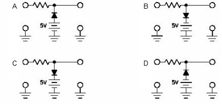

Q.1 What is the function of a Limiter circuit?
A) Regulate the DC voltage output level.
B) Limit the amplitude of any waveform to a predetermined level.
C) Maintain the reference level at a constant value.
D) Limit the frequency to a predetermined value.
Ans : B
Q.2 What component is the basis of limiter circuit?
A) Resistor
B) Capacitor
C) Diode
D) Inductor
Ans : C
Q.3 From the illustrations below, select the series negative limiter?
Ans : D
Q.4 From the illustrations below, selct the parallel negative limiter with positive bias?
Ans : D

Q.5 Using the illustrations in Question 4, select the correct output waveform for a parallel negative limiter with positive bias?
Ans : B
Sources
[LINKS]